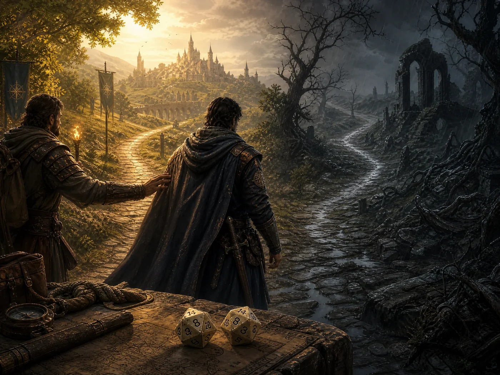

Sistema
Atributos, testes, combate, perícias e a trilha de progressão de personagem.
Os cinco atributos
Toda ficha em Valédria usa exatamente cinco atributos: Força, Destreza, Constituição, Sabedoria e Carisma. Na criação, você distribui 15 pontos entre eles (e mais 5 pontos por nível acima do 1º), com mínimo de 1 em cada atributo e sem um teto fixo por atributo — o único limite real é o total de pontos que você tem disponível.
Testes e dificuldade
Um teste é sempre 1d20 + atributo relevante, comparado a um número de dificuldade. Quando você tem treino em uma perícia relacionada, isso soma vantagem ao teste (veja abaixo).
| Dificuldade | ND | Descrição |
|---|---|---|
| Trivial | 8 | Qualquer pessoa tenta sem medo de errar. |
| Fácil | 10 | Exige um mínimo de atenção ou habilidade. |
| Moderada | 13 | Um desafio real para alguém destreinado. |
| Difícil | 16 | Exige treino, atributo alto ou sorte. |
| Muito difícil | 19 | Poucos conseguem sem vantagem. |
| Quase impossível | 22 | Feito lendário, quase sempre precisa de ajuda ou vantagem. |
Vantagem e desvantagem
Vantagem e desvantagem são resolvidas rolando 2d20: com vantagem, use o maior resultado; com desvantagem, use o menor. Se as duas se aplicam na mesma rolagem, elas se cancelam e o teste volta a ser um único d20.
Cada personagem começa com 2 perícias treinadas, escolhidas livremente entre a lista abaixo.

assets/img/personagens/mesa-de-jogo.png.webpPerícias
| Perícia | Atributo | Uso típico |
|---|---|---|
| Atletismo | Força | Correr, saltar, escalar, nadar contra a corrente, arrombar portas. |
| Acrobacia | Destreza | Manter equilíbrio, cair bem, se contorcer para escapar de agarrões. |
| Furtividade | Destreza | Mover-se sem ser visto ou ouvido. |
| Ladinagem | Destreza | Abrir fechaduras, batalhar bolsos, esconder pequenos objetos no corpo. |
| Iniciativa | Destreza | Reagir primeiro quando o perigo surge. |
| Montaria e Veículos | Destreza | Conduzir cavalos, carroças e barcaças em condições difíceis. |
| Percepção | Sabedoria | Notar detalhes, emboscadas e ruídos fora do lugar. |
| Investigação | Sabedoria | Juntar pistas, examinar cenas e documentos. |
| Memória | Sabedoria | Lembrar de fatos, lendas e rostos. |
| Medicina | Sabedoria | Estabilizar feridos, diagnosticar doenças. |
| Sobrevivência | Sabedoria | Rastrear, encontrar água e abrigo, prever o tempo. |
| Leitura de Ambiente | Sabedoria | Perceber tensões sociais e o clima de um lugar. |
| Persuasão | Carisma | Convencer sem ameaçar. |
| Intimidação | Carisma | Convencer pelo medo. |
| Enganação | Carisma | Mentir de forma convincente. |
| Intuição | Carisma | Perceber quando alguém está mentindo ou escondendo algo. |
| Comando | Carisma | Liderar, dar ordens que são seguidas em momentos de tensão. |
Combate
Ataque
1d20 + atributo relevante para a arma ou magia usada, contra a Defesa do alvo.
Dano
Dado da arma + metade do atributo (arredondado para baixo).
Defesa
Número fixo que o ataque precisa alcançar ou superar para acertar.
A Iniciativa usa Destreza para decidir a ordem dos turnos em combate.
Papéis de personagem
Dois caminhos, uma escolha
Todo personagem começa com 50 pontos de Mana. A partir daí, dois caminhos avançados se abrem — e são mutuamente exclusivos: a Magia Externa (Livro VI), que consome Mana e escala pelo Grimório, ou a Aura (Livro VII), que consome Fôlego de Aura e escala pelos Caminhos marciais. Nenhum personagem pratica os dois ao mesmo tempo.
Trilha de progressão
Nas terras humanas, a progressão vai do nível 1 ao nível 10. A partir daí, o crescimento deixa de ser medido em níveis fixos e passa a ser medido pelos graus de poder concedidos por professores, grimórios e forjas rúnicas nos arcos élfico, anão e demoníaco.